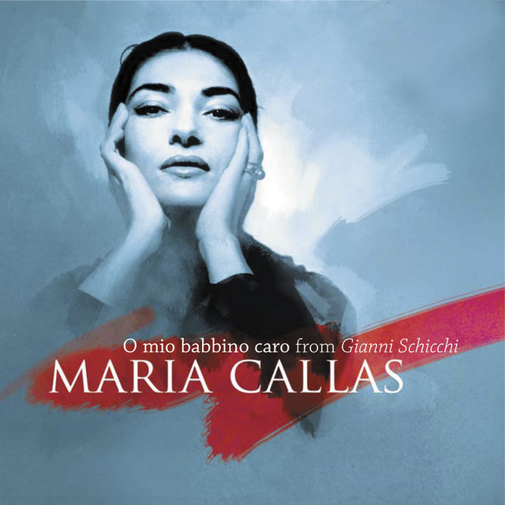
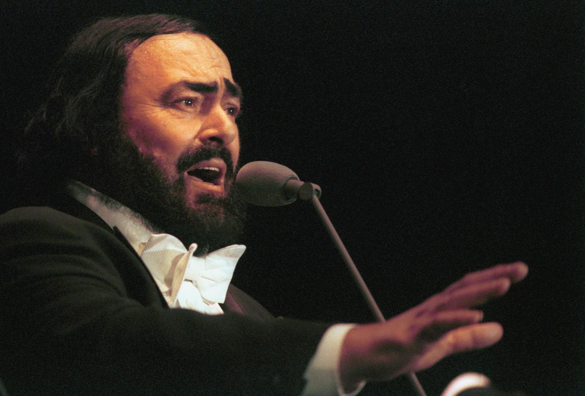
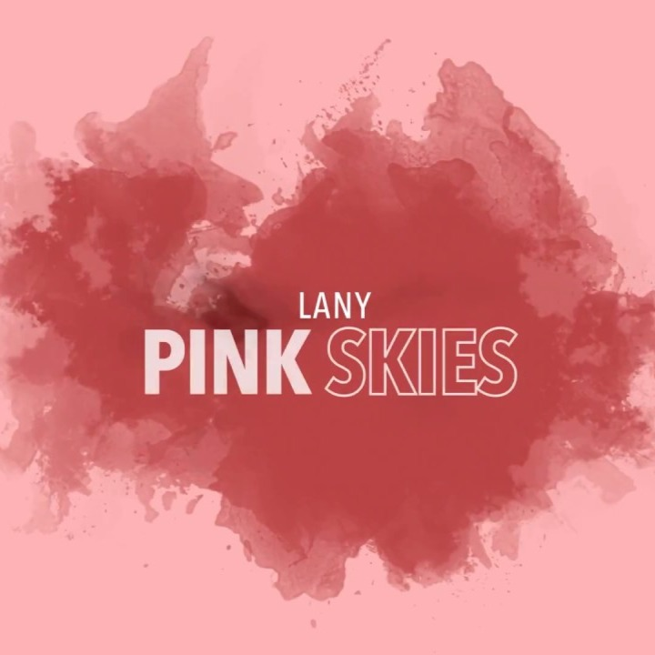
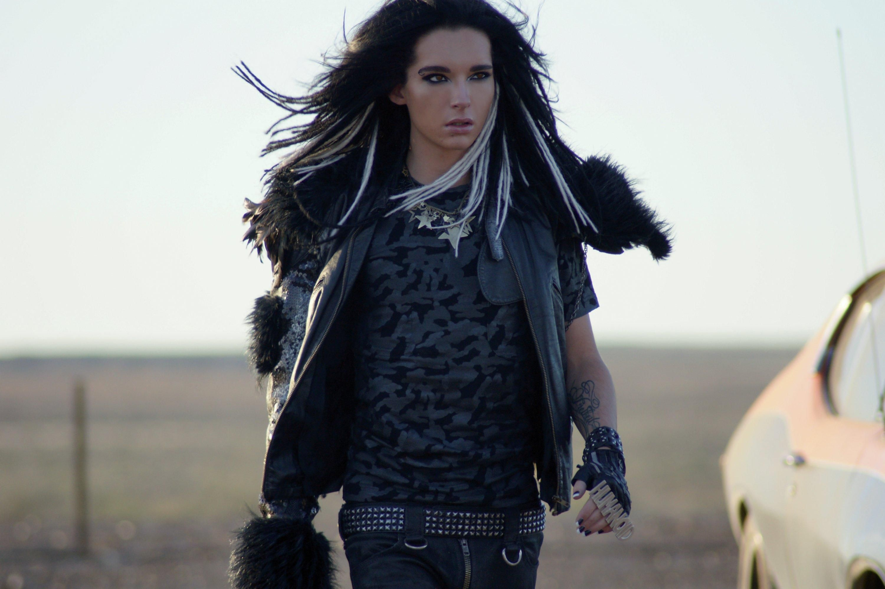
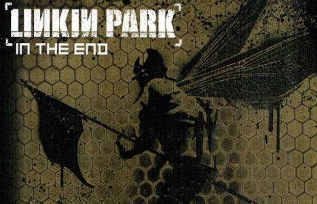

Music can transform the emotions and feelings of the people within no time. It can lessen the stress, pain, struggle, distraction and bring positivity and calmness in our daily life. Music holds the power to bring people together in different ways. Music has been scientifically proven to have a powerful effect on the brain. Recent research shows that music can help in many aspects of the brain, including pain reduction, stress relief, memory, and brain injuries. Music is also known to be the universal language of humanity. It has the power to bring positivity and entertainment in the lives of people. Everyone loves music because it holds the power to transform the mood and bring a sense of relief in their daily life. Music can make a person loyal and loving as it stays with people until the end of their lives. It never leaves the person alone during their difficult times in life.
Classical

O Mio Babbino Caro - Maria Callas
O Mio Babbino Caro is a soprano aria from the opera Gianni Schicchi 1918 by Giacomo Puccini to a libretto by Giovacchino Forzano. It is sung by Lauretta after tensions between her father Schicchi and the family of Rinuccio, the boy she loves, have reached a breaking point that threatens to separate her from Rinuccio. The aria was first performed at the premiere of Gianni Schicchi on 14 December 1918 at the Metropolitan Opera in New York by the popular Edwardian English soprano Florence Easton. It has been sung by many sopranos. Dame Joan Hammond won a Gold Record in 1969 for 1 million sold copies of this aria. The aria is frequently performed in concerts and as an encore in recitals by many popular and crossover singers. Maria Callas Commendatore OMRI was an American-born Greek soprano who was one of the most renowned and influential opera singers of the 20th century.
Ave Maria - Schubert
Ave Maria in English means Hail Mary, original German title Ellens Gesang known as “Ellen's Song” III, song setting, the third of three songs whose text is derived of a section of Sir Walter Scott's poem The Lady of the Lake 1810 by Austrian composer Franz Schubert. It was written in 1825. Franz Schubert's Ave Maria, by far the most famous version. His work is actually from a larger collection of seven pieces op. 25, based on the epic poem “The Lady of the Lake”. The thing about Schubert's Ave Maria is that it opens with those words. Since this work has been recorded and performed so many times. Despite being one of the world's favorite settings of Ave Maria, Schubert never actually wrote a piece called Ave Maria. He wrote it in 1825, aged 28, to the words of Sir Walter Scott's epic poem The Lady of the Lake. The song does contain the words Ave Maria, but only in reference to the prayer itself.

Nessun Dorma - Luciano Pavarotti
The Italian aria is taken from Giacomo Puccini's opera Turandot, an adaptation of the play of the same name by Count Carlo Gozzi from 1792. It is sung by the character Prince Calaf who is attempting to win the heart of Princess Turandot. The spine-tingling piece builds and builds to an incredibly emotional climax that has been known to reduce people to tears. It translates as Let no one sleep. Nessun dorma had long been a staple of operatic recitals, Luciano Pavarotti popularised the piece beyond the opera world in the 1990s following his performance of it for the 1990 World Cup, which captivated a global audience. Both Pavarotti and Plácido Domingo released singles of the aria, with Pavarotti's reaching number 2 in the UK. The Three Tenors in Concert which includes José Carreras, performed the aria at three subsequent World Cup Finals, in 1994 in Los Angeles, 1998 in Paris, and 2002 in Yokohama.
The Archer” is a mid-tempo track about Taylor Swift's insecurities in a relationship. It is the third song released from 2019's Lover, preceded by “ME!” and “You Need To Calm Down”. Taylor Swift first teased “The Archer” in the music video for “ME!”, which features a scene with a band of Cupid is often depicted as an archer, who shoots arrows at people to make them fall in love. She sings in the chorus, which some fans are reading as a nod to her boyfriend, Joe Alwyn. They say he is the one who has stayed with her. The Archer is the fifth track from Taylor Swift's seventh studio album, Lover. This song is not a single, as confirmed by Taylor during her Instagram livestream, but rather a promotional single. The Archer is reflective song about Taylor's perception of herself. It references her boyfriend Joe Alwyn and "enemies" that "started out friends". One famous friendship is Karlie Kloss who apparently started telling Scooter Braun about Taylor's career.
Sanctuary - Joji
This is a love song in which Joji is identifying his significant other as his “sanctuary”. This is due to her fulfilling his desire to fall in love. They share a mutual relationship goal which is sincerity. This track is an expression of his yearning for the two of them to be together. He is especially fond of their nighttime interludes. Moreover he has already concluded that this particular individual is the one. As the title implies, he enjoys her company so much that she has become his “sanctuary”. In the "Sanctuary" video, Joji is the hero of the universe, but after saving the galaxy he finds himself serving no more purpose in life. The video explores Joji's next step in finding meaning while he also struggles with holding onto the past. George Kusunoki Miller, better known by his stage name Joji and formerly by his online aliases Filthy Frank and Pink Guy, is a Japanese singer, songwriter, comedian, and a former Internet personality and YouTuber.

Pink Skies - Lany
LANY is an American pop rock band from Los Angeles. Formed in Nashville in 2014, the band consists of Paul Jason Klein, Charles Leslie "Les" Priest, and Jake Clifford Goss. LANY is a three-piece alternative band from Los Angeles. In the pre-chorus, Paul begins to shift his perspective away from description and more towards direct dialogue. Paul Klein, the vocalist for LANY, wasn't always set on a career in music. In his earlier years, he convinced himself that he was destined to be in the NBA. In high school, however, this quickly changed as he realized that professional basketball was probably an unrealistic goal given his height. Although basketball wasn't in the cards, Paul did posses and explore his creativity. Here, LANY again illustrates calculated design, but this time in the form of the song's structure. This concept of aesthetic imagery follows suit in their lyricism as well. In the opening lyrics of "pink skies," LANY immediately invokes the image of a partner, though never mentioning it.
A little over a decade ago the Tennessee-based rock band, Kings of Leon, released their fourth studio album "Only by the Night". This album produced two of the biggest selling and best charting tracks by the band ever. “Sex on Fire,” and “Use Somebody” still remains the most popular tracks of Kings of Leon to date, with a die-hard fan base around them. In this article, we dig around the meaning of the single “Use Somebody” by Kings of Leon. “Use Somebody” is the fourth track on the fourth studio album "Only by the Night" by Kings of Leon formed by three brothers Caleb Followill, Jared Followill, Nathan Followill, and Matthew Followill. This track went on to achieve the band's first top 5 chartings in the US and UK, ranking at #4 on Billboard Hot 100 chart and #2 on UK Singles chart. The single is also certified Platinum in sales across many countries such as the US, the UK, Australia, Belgium and New Zealand.

Automatic - Tokio Hotel
"Automatic" are the first singles from German pop rock band Tokio Hotel's third German studio album and second English studio album Humanoid. "Automatisch" was released in German-speaking countries on 18 September 2009 and "Automatic" was released in the United States on 22 September 2009. Tokio Hotel is a German rock band, founded in 2001 by singer Bill Kaulitz, guitarist Tom Kaulitz, drummer Gustav Schäfer, and bassist Georg Listing. "Automatic" is the sense of disconnection between the singer and the person that the song is about. They do not see eye to eye, and Bill is hurt by it. The song, although very catchy and easy to learn, has an underlying sense of melancholy, mixed in with a hint of anger. He wants to trust her, but she does not even feel anything for him. She tries to cover it by giving him false hope. The thought of being with someone who does not love you back is sad. Bill does such an amazing job of conveying the defiance evenly throughout the song.

In The End - Linkin Park
"In the End" is a song by American rock band Linkin Park. It is the eighth track on their debut album, Hybrid Theory (2000), and was released as the album's fourth and final single. "In the End" received positive reviews by music critics, with most reviewers complimenting the song's signature piano riff, as well as noting rapper Mike Shinoda's vocal prominence in the song. "In the End" also achieved mainstream popularity, and was a commercial success upon release. The song reached the top ten on numerous worldwide music charts and reached number two on the US Billboard Hot 100, the band's highest peak on the chart, as well as their first song that peaked within the top 40 in early 2002, making it a sleeper hit. It also reached number one on the Z100 top 100 songs of 2002 countdown. It ranked at number 121 in Blender magazine's The 500 Greatest Songs Since You Were Born. "In The End" has become one of Linkin Park's most recognizable and signature songs.